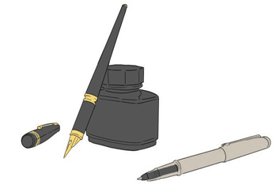
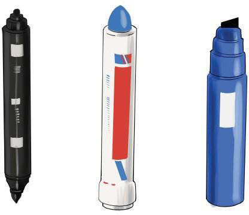

Marker pens:
These are ink-based sketching, writing or drawing tools. They have a container filled with ink and are made in different forms. Some marker pens have a broad tip while others are dual-brush pens with a fine tip and some have a chisel tip. Marker pens can be applied on different surfaces such as paper, wall, iron or concrete. Figure 2.10 shows samples of marker pens.
Dual-brush
Broad tip
Chisel tip